Пепеляшка
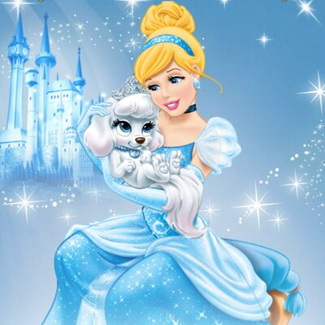Пепеляшка е красиво, мило и младо момиче, което е хванато в капан на доведено семейство, което не я обича и не я цени. Поробена от злата си мащеха лейди Тремейн и двете й дъщери, Анастасия и Дризела, от Пепеляшка се изисква да изпълнява многобройни домакински задължения в къщата, но за щастие й помагат животните, живеещи в плевнята, мишките и птиците, които живеят в и около замъка. Пепеляшка мечтае да отиде на бала и да се срещне с принца и когато пристига писмо, обявяващо бала, тя иска разрешение от мащахата си да отиде и лейди Тремейн й позволява да отиде, ако има подходяща рокля и е свършила цялата си работа, но дъщерите й създават толкова много работа за Пепеляшка, че тя не може да преобрази стара бална рокля, но за голяма изненада на Пепеляшка, мишките го правят вместо нея, използвайки изхвърлени предмети от Анастасия и Дризела. Но лейди Тремейн насърчава дъщерите си да развалят роклята, след като откриват, че Пепеляшка носи пояс от Анастасия и мъниста, принадлежащи на Дризела. И когато Пепеляшка напълно се отказва от мечтата си се появава Феята кръстница, която с вълшебна пръчица прави карета от тиква, кочияш и лакей от коня и кучето Бруно и синя бална рокля и стъклени чехли, за да може Пепеляшка да отиде на бала. Преди да си тръгне, феята-кръстница предупреждава Пепеляшка, че заклинанието ще се развали в полунощ. На бала тя и принца прекарват вечерта заедно и се влюбват, но в полунощ Пепеляшка избягва като по невнимание изпуска един от стъклените си чехли. Принцът не знае името й, но намира стъклен чехъл и решава да обиколи народа и да пробва стъкления чехъл на крака на всяка мома. Докато се подготвя за предстоящото посещение, лейди Тремейн разбира, че Пепеляшка е момичето на бала и затова я заключва, но животните я спасяват и когато й слагат чехъла, всички разбират че тя е девойката. Скоро след това Пепеляшка е отведена в двореца, където се омъжва за принца.Така с помощта на няколко приятели мишки и нейната фея кръстница, мечтата на Пепеляшка се сбъдва.
Снежанка
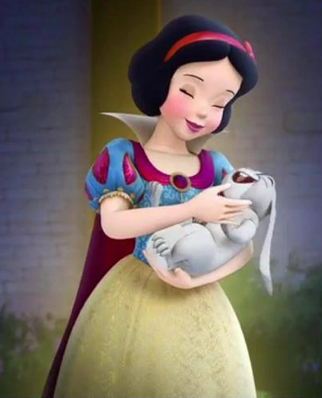Базиран на известната приказка на братя Грим(Снежанка и седемте джуджета), филмът започва с описание на злата и суетна кралица(доведената мащеха на Снежанка), която пита магическото си огледало "коя е най-красива на Земята" и когато научава, че нейната красива доведена дъщеря, Снежанка, която е принудена да работи като слугиня по заповед на злата си мащеха и за да скрие красотата си се облича в парцали, е "най-красивата на Земята". Ядосана, кралицата изпраща Хумберт, ловеца, да убие Снежанка, но той не може да извърши деянието и казва на младото момиче да избяга. В гората Снежанка открива къщичка, обитавана от седем малки джуджета, които я посрещат топло в дома си, след като тя предлага да им готви и чисти. Злата кралица в крайна сметка научава за местоположението на Снежанка и решава да се преобрази в стара и грозна търговка и отравя красива червена ябълка, която ще потопи Снежанка в сън, който ще бъде нарушен само ако Снежанка получи първата истинска любовна целувка от любимия си принц. Когато Снежанка захапва ябълката, тя моментално пада на земята, но не умрира, а заспива. Седемте джуджета, за да отмъстят за нейната смърт, преследват злата мащеха из гората, която се спъва и пада в пропаст. Снежанка е толкова красива, въпреки че привидно е умряла, че седемте джуджета нямат сърце да я погребат и я поставят в стъклен ковчег, върху който всеки ден оставят цветя, и я посещават заедно с животните от гората. Един ден се появява принцът, който е бил влюбен в нея отдавна и като я вижда в ковчега, той я целува, разрушавайки магията на отровената ябълка. Снежанка се събужда и след като се сбогува със седемте джуджета и животните, принцът я завежда в замъка си, където са щастливи.
Аврора
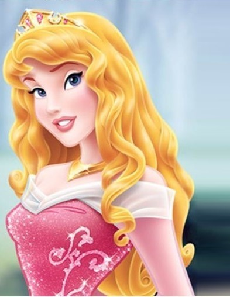Крал Стефан и кралица Лия обявяват празник за раждането на дъщеря си Аврора. Пристигат трите добри феи, наречени Флора , Фауна и Лъчезария, които са благословят детето с дарове на красота и песен. Преди Лъчезария да успее да даде благословията си, злата фея Злодеида се появява и проклина принцесата че на шестнадесетия й рожден ден, тя ще убоде пръста си във вретеното и ще умре, но Лъчезария променя проклятието, така че вместо да умре, Аврора да спи, докато не бъде събудена от целувката на истинската любов. Феите, за да запазят Аврора в безопасност, я отвеждат в гората. Години по-късно Аврора, на шестнадесетия й рожден ден трите феи я молят да събере горски плодове в гората, за да могат да й приготвят парти изненада, но Лъчезария и Флора спорят за цвета на балната рокля на Аврора и привличат вниманието на Злодеида. Докато пее в гората, Аврора привлича вниманието на принц Филип, вече красив млад мъж и те моментално се влюбват. Когато се връща в къщичката феите казват на Аврора истината за нейното наследство я връщат в замъка. Тогава се появява Злодеида и магически примамва Аврора да докосне вретеното и да се убоде, а всички в кралството заспиват. Зладеида взима принц Филип за пленник, но феите намират и освобождават принца, въоръжавайки го с магическия меч на истината и щита на добродетелта и въпреки че Злодеида се превръща в гигантски дракон, за да го спре, Филип я побеждава. Филип събужда Аврора с целувка, разваляйки магията и събужда всички в двореца, а Аврора се събира с родителите си.
Бел
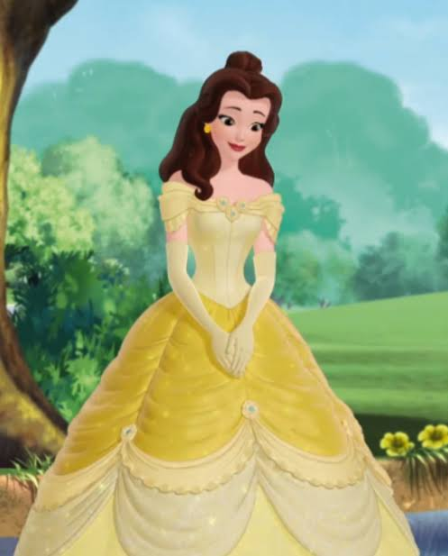Бел красива библиофилка, който, макар и похвалена от съселяните си за ненадминатата си красота, в същото време е осмивана заради интелигентността и несъответствието си с тях. Отегчена от провинциалния си живот, в който тя е безмилостн и романтично преследвана от арогантен ловец на име Гастон, Бел копнее за приключения. След като конят на баща ѝ се завръща без ездача си, тя с желание се впуска в гората да го търси. Стига до един замък, където открива баща си в плен на Звяра-принц, който поради арогантността си се превръща в звяр. Тя убеждава Звяра, че ще замени собствената си свобода в замяна на тази на баща си, тъй като баща ѝ е болен. Тя обещава да остане завинаги със Звяра в замъка му заедно с неговия персонал от омагьосани предмети. Любопитството на Бел я отвежда до забраненото западно крило, където тя открива омагьосана роза, без да осъзнава, че тя е свързана със съдбата на Звяра. Яростта на Звяра от нейното промъкване я кара да избяга на кон от замъка. Бел е преследвана от вълци в гората, но те са прогонени от Звяра, след което тя помага на ранения звяр да се върне в замъка, където лекува раните му. Въпреки че първоначално не харесва похитителя си, Бел постепенно се научава да приема Звяра въпреки външния му вид и в крайна сметка се сприятелява с него. Гастон завижда до такава степен на силната връзка между Бел и Звяра, че той щурмува замъка и смъртно ранява Звяра, макар че Гастон намира собствената си смърт в борбата. Въпреки това, Бел признава любовта си към Звяра точно навреме, за да развали магията, под която е бил поставен от магьосница като наказание за егоизма си, и Звярът в крайна сметка се превръща обратно в красив принц.
Мулан
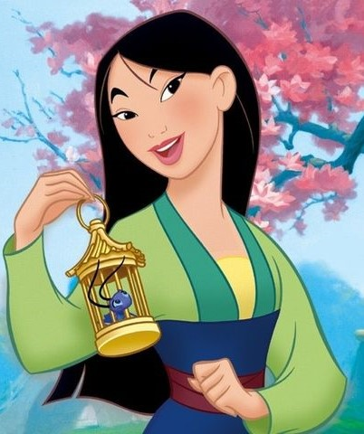Хуните, водени от Шан Ю, нахлуват в Китай, като нарушават Великата стена и китайският император заповядва по един мъж от всяко семейство да се присъедини към китайската армия. Когато заповедта достига до семейството на Мулан, тя знае, че баща й е възрастен и няма да оцелее, затова взема старата броня на баща си и се маскира като момче на име Пинг, записвайки се в армията от негово име. След като научават за заминаването на Мулан, духовете на предците на семейството на Мулан нареждат на малкия дракон Мушу, да събуди „големия каменен дракон“, за да закриля Мулан, но Мушу решава той да се присъедини към Мулан в армията и да й помогне, с надеждата, че предците може да го коронясат за пазител. В тренировъчния лагер, Мулан успява да премине, въпреки че първоначално й липсват военни умения. Под командването на капитан Ли Шанг, тя и нейните колеги, набрани Яо, Линг и Чиен-По, постепенно се превръщат в обучени воини. Желаейки да види как Мулан успява като войн, Мушу създава фалшива заповед от бащата на генерала да се последва основната имперска армия в планините, но когато пристигат откриват, че лагерът е опожарен. Тогава войниците попадат в засада на хуните, но Мулан умело използва оръдие, за да предизвика лавина, която погребва повечето от нашествениците включително Шан главатаря, който я наранява и след като лавината стихва, всички разбират, че Мулан е момиче и я изгонват от армията. Но Мулан открива, че шестима хунски воини, включително Шан Ю, са оцелели след лавината и възнамеряват да заловят императора. Мулан се връща и разказва на Шанг за хуните и тя, Яо, Линг и Чиен-По и Шанг се опитват да предодвратят убийството на императора като Мулан примамва лидера на хуните на един покрив, където го въвежда в единоборство, а междувременно, действайки според инструкциите и сигнала на Мулан, дракона Мушу изстрелва голяма небесна ракета срещу Шан Ю и той пада. Мулан е възхвалявана от императора и получава герба на императора и меча на Шан Ю като подаръци, но отказва предложението му да бъде негов съветник и вместо това се връща при семейството си, а Мушу е става пазител.
Покахонтас
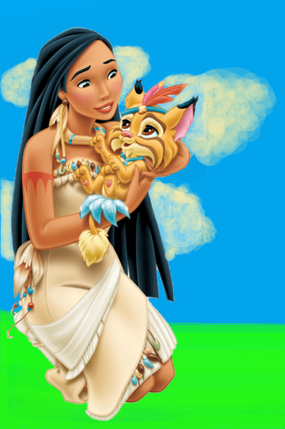Покахонтас е дъщеря на вожда Поухатан, а майка й е починала. Тя научава, че Кокум, един от най-смелите воини на баща й, е поискал да се ожени за нея. Покахонтас обаче не смята, че това е правилният път за нея и не е съгласна. Един ден забелязва кораб, превозващ европейци от Лондон, които търсят злато, а по-късно Покахонтас се сблъсква с един от тях-Джон Смит. С течение на времето двамата се опознават, задавайки си всякакви въпроси за хората, живота и различните светове на другия. Покахонтас разказва за красотата и значението на природата и уважението към земята, което кара Джон да види лошото на мислите си и да промени начина си, а двамата се влюбват един в друг. Когато Кокум се натъква на Покахонтас и Джон Смит, той се вбесява и напада Джон. Покахонтас се опитва да ги раздели, но Томас, който е изпратен да намери Джон, стреля и убива Кокум. Джон Смит поема вината за смъртта на Кокум, арестуван е от хората на вожда Поухатан и е осъден на смърт при изгрев слънце. Покахонтас осъзнава, че трябва да спре екзекуцията, която ще доведе до война между индианците и европейци. Тя пристига навреме, за да спаси Джон Смит, като предлага да жертва себе си. Тогава капитана на кораба се ядосва и стреля като ранява Джон Смит.Когато Джон Смит моли Покахонтас да отиде с него в Англия, тя обяснява, че мястото й е във Вирджиния, с нейните хора, но го убеждава, че винаги, ще е с него във всичко.
Жасмин
Жасмин е принцеса на Аграба и дъщеря на султана. Разочарована от постоянното вземане на решения за нея и принуждаването ѝ да се омъжи за принц, Жасмин се дегизира като селянка и избягва от двореца. На близкия пазар тя се сприятелява с уличния крадец Аладин, след като я спасява от ядосан продавач, който почти отрязва ръката ѝ. Избягвайки до скривалището на Аладин, двамата осъзнават, че се чувстват в капан в собствената си среда и копнеят за по-добър живот. Когато Аладин е арестуван от дворцовата охрана, Жасмин изисква незабавното му освобождаване, за да отхвърли заповедите на Джафар, коварния велик везир на султана. Когато принцесата се изправя срещу Джафар, той лъже и ѝ казва, че Аладин вече е екзекутиран, оставяйки Жасмин смутена, обвиняваща се за смъртта му; в действителност Джафар използва Аладин, за да вземе магическа лампа, съдържаща джин. Когато Джинът, който спасява и се сприятелява с Аладин, изпълнява желанието му да бъде преобразен в принц, за да увеличи шансовете си да ухажва Жасмин, Аладин ѝ се представя като „Принц Али“. Въпреки че първоначално не е впечатлена, Жасмин е очарована, след като се присъединява към него на вълшебна разходка с килим, в края на която тя открива, че принцът всъщност е същият селянин, когото е срещнала на пазара. Аладин обаче убеждава Жасмин, че той наистина е принц, който, подобно на нея, само от време на време се маскира като обикновен човек. Когато Джафар научава истината за Аладин, той открадва лампата и става господар на Джина, прогонвайки Аладин и принуждавайки Джина да го направи султан, като същевременно поробва както Жасмин, така и баща ѝ. След като отказва да се омъжи за него, Жасмин целува Джафар, за да го разсейва, докато Аладин се връща навреме, за да подмами Джафар да си пожелае да бъде джин и по този начин да се хване в лампата. Жасмин и султанът най-накрая са освободени и тя и Аладин се сгодяват, след като султанът отменя закона, за да може Жасмин законно да се омъжи за когото реши.
Ариел
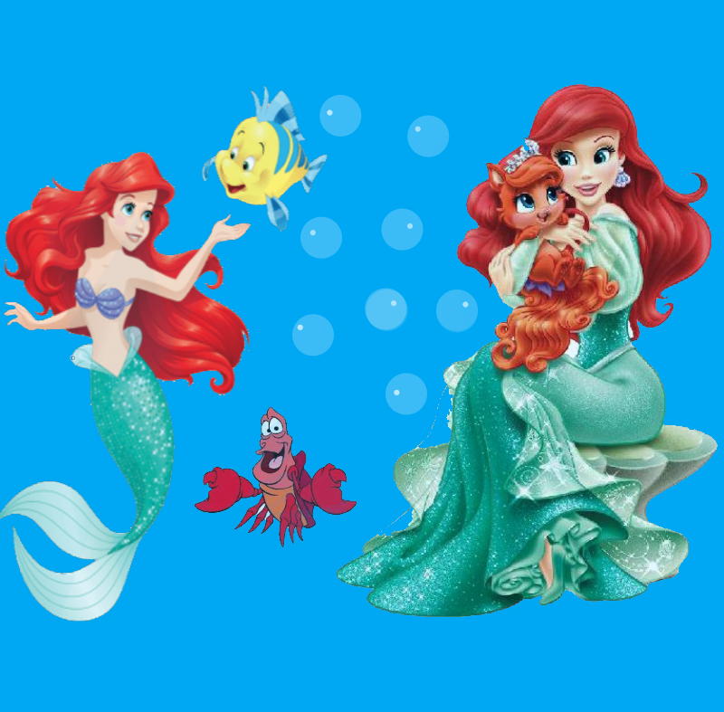Ариел е принцеса русалка, която желае да стане човек и да живее на земята. С най-добрия си приятел Флаундър, Ариел събира и съхранява случайни човешки артефакти в пещерата си и се консултира с чайка на име Скътъл за човешката култура и предметите, които намира. Бащата на Ариел, цар Тритон, и ракът Себастиан често предупреждават Ариел, че контактът между морските хора и хората от сушата е забранен. Една вечер Ариел, Флаундър и Себастиан отиват до океанската повърхност, за да гледат тържество на кораб за рождения ден на принц Ерик и Ариел се влюбва в принца, но се разразява силна буря, която разрушава кораба, но Ариел спасява Ерик от удавяне и го извежда на брега и му пее, но точно когато той идва в съзнание, се връща в морето, за да не бъде разкрита. Ариел поещава Урсула, злата морска вещица и сключва сделка с нея - ще я трансформира в човек в продължение на три дни в замяна на нейния глас, но в рамките на тези три дни Ариел трябва да накара принца да се влюби в нея. Ариел приема и след това получава човешки крака, среща се с Ерик и прекарва времето си с него, но не може да му каже нищо, защото няма глас . За да е сигурна в провала на Ариел, Урсула се маскира като красива млада жена на име Ванеса и се появява на брега пред замъка на Ерик, като пее с гласа на Ариел и така заблуждава принца. Когато Ариел и приятелире й разбират, Скатъл чупи мидата на врата на Ванеса и така Ариел си връща гласа, а Урсула избягва в морето. След като Урсула изчезва, Тритон, осъзнавайки, че Ариел наистина обича Ерик, с готовност приема брака им. Ариел и Ерик се женят и заживяват щастливо.
Тиана
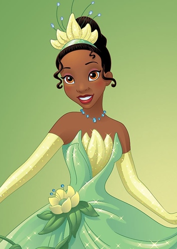Тиана работи на две работни места, за да събере достатъчно пари, за да превърне остаряла захарна мелница в ресторант, обещание, което е дала на покойния си баща си. В резултат на това Тиана е погълната от работата си и няма време за нищо друго. Когато нейната богата най-добра приятелка от детството Шарлот иска Тиана да направи и сервира бенет на маскарадния бал, организиран за красивия, но лишен от наследство принц Навин, казва, че Тиана ще получи голяма сума пари и ще успее да откупи мелницата. Същата нощ, когато Тиана случайно изцапва костюма си, Шарлот любезно й дава една неина рокля. Изведнъж се появава говореща жаба, която твърди, че е принц Навин, но е под заклинание на злия магьосник Фасилие. Объркайки я с принцеса заради костюма й, Навин обещава да даде на Тиана нужните пари, ако тя отново го превърне в човек, като го целуне, но вместо говорещата жаба да се превърне в принц, Тиана се превръща в жаба. Докато бягат хората на партито, решават да намерят начин да развалят магията. Междувременно и двамата се научават на нещо ново-Навин се научава да готви и на отговорност, а Тиана се научава как се танцува и да се забавлява и така и двамата се влюбват. По пътя срещат срещат свирещ на джаз алигатор на име Луис и светулка на име Рей, които им помагат да стигнат до магьосницата Мама Оди, която казва, че за да се развали магията Навин трябва да целуне принцеса като Шарлот, затова и двамата се връщат. Но там вече ги чакал Фасилие и Тиана се изправя лице в лице с него като му взима амулета. Той обещава да превърне мечтата й за ресторанта в реалност, ако му предаде амулета, който играе важна роля в плановете му и ако се счупи той ще изчезне. След като й напомня за цялата работа, която е свършила, и за хората, които са я спрели от постигането на мечтата й, той й показва образа на майка й и на покойния й баща, но Тиана виждайки семейството си заедно, най-накрая осъзнава какво е се е имало предвид, че баща й, че никога не е получил това, което е искал, но е имал това, от което се е нуждаел-любов. Тиана успява да разбие амулета и Фасилие изчезва. Тиана намира Навин, който обещава на Шарлот, че ще се ожени за нея, но само ако тя даде на Тиана нейния ресторант, но магията не се разваля, понеже Шарлот не е истинска принцеса. Тиана накрая признава, че обича Навин и двамата се женят в залива. След като се целуват, те най-накрая отново стават хора, защото Тиана като съпруга на принц става принцеса. Навин и Тиана отварят ресторанта, който сега носи името "Ресторантът на Тиана" и танцуват под звездите.
Рапунцел
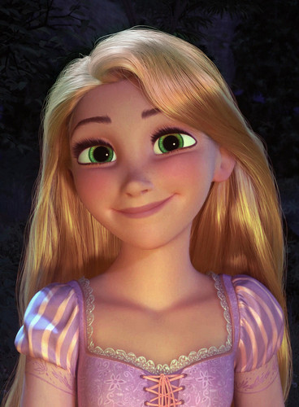Рапунцел е малка принцеса, която има лечебните способности от магическо цвете, което болната кралица е погълнала по време на бременността си. Но принцесата е отвлечена от суетна старица на име Майка Готел, която използва косата й, за да остане млада и красива. Готел оставя принцесата във висока изолирана кула, от която Рапунцел вижда хиляди летящи фенери, без да знае, че тези фенери всъщност са начинът на кралството да запомни изчезналата принцеса. С наближаването на осемнадесетия й рожден ден Рапунцел става все по-нетърпелива и иска да напусне кулата и да види летящите фенери, но Майка Готел не й разрешава, затова принцесата изнудва издирвания крадец Флин Райдър, който по случайност открива кулата и се качва, за да я разгледа, да заведе Рапунцел там откъдето идват фенерите в отсъствието на майка й. Въпреки това, Готел научава за неподчинението на Рапунцел и ги преследва, наемайки двойка крадци да й помогнат. Рапунцел и Флин пристигат в кралството навреме за церемонията с фенерите. Скоро след това Флин попада в засада и е предаден на полицията като е осъден на смърт и преди някой да успее да навреди на Рапунцел, Готел я отвежда обратно в кулата. Обратно в кулата, Рапунцел изведнъж спомня за истинската си самоличност и започва да се бунтува срещу Готел, но мащехата й не желае да загуби Рапунцел и косата й, и я хваща в капан. Когато Флин успява да избяга и пристига в кулата, за да спаси Рапунцел, Готел го пронизва. Рапунцел обещава да направи каквото пожелае Готел за да го спаси. Готел се съобразява и я пуска, но точно преди Рапунцел да успее да го излекува, Флин отрязва косата й, което я кара да загуби всичките си магически сили, и така Майка Готел изчезва. Магията на цветето се проявява през сълзите на Рапунцел и Флин се съживява. Двамата се връщат в двореца, където Рапунцел най-накрая се събира с родителите си, а Флин приема рожденото си име Юджийн Фицхърбърт и предлага брак на Рапунцел.
Мерида
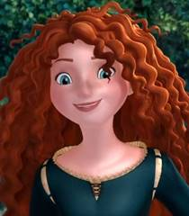Мерида е принцеса и живее в мистичното шотландско кралство ДънБрок с майка си кралица Елинор, баща си крал Фъргюс и палавите си братя тризнаци Хамиш, Хюбърт и Харис. Елинор се опитва да убеди Мерида да бъде перфектна принцеса. Мерида обаче обича да язди през планините на своя кон Ангъс и да практикува стрелба с лък и игра с меч, умения наследени от баща й. Една вечер Мерида открива, че съюзническите господари на клана на краля представят синовете си като ухажори за нейния брак. Лордовете пристигат със синовете си, въпреки че тя не иска да се омъжи. Мерида избира за състезание, по което да се определи бъдещия й съпруг, стрелбата с лък и след всички лордове, тя самата се явява като заявява, че така се бори за свободата си. След като тя самата спечели състезанието, Елинор предупреждава Мерида, че вражда между клановете ще възникне, ако не бъде настроена правилно, но Мерида се ядосва и си тръгва Скоро стига до къщичката или магазина на една вещица. Мерида моли вещицата за заклинание, за да промени съдбата й. Вещицата дава на Мерида кексче с магия, което да даде на Елинор, но без да иска Мерида превръща майка си в черна мечка. Мерида извежда Елинор от замъка, тъй като баща й е ловец на мечки, а тя трудно би му обяснила всичко. Мерида и Елинор, която все още запазва повечето от човешките си качества и характер, пристигат в къщичката на вещицата, където вещицата оставя съобщение в котела си, казвайки, че заклинанието ще остане постоянно до втория изгрев, освен ако не „поправи връзката“ между двете. На следващия ден Мерида и майка си помагат да търсят храна. След като правят това, Мерида е нападната от мечка, която изглежда идентична с майка й, но открива, че мечката е нейната майка, което показва, че майка й скоро ще се превърне в истинска мечка. Появяват се следи от светещи пламъчета, които ги отвеждат до руините на древен замък, където Мерида открива, че принцът Мор'ду е получил подобно заклинание от вещицата и се е превърнал демонска мечка. Внезапно Мор'ду напада Мерида, но Елинор я спасява и те бягат. Мерида убеждава майка си, че ако не развалят магията, тя ще стане дива мечка завинаги като Мор'ду. Мерида осъзнава, че „да поправи връзката, разкъсана от гордост“ би означавало да поправи семейния гоблен, който тя беше разрязала ядосано с меча си по време на споровете им. Двете се втурват обратно към замъка, където откриват Фъргюс и лордовете да се карат заради Мерида, която влиза в голямата зала и спира битката. Мерида прави вълнуваща реч, убеждавайки кланове, че трябва да възстанови връзката им и че синовете на лордовете трябва да се оженят за когото изберат. Лордовете се съгласяват и докато празнуват, Мерида и Елинор се качват в стаята с гоблени, за да поправят скъсания гоблен. Фъргюс влиза в стаята на Елинор, за да й разкаже за случилото се, но когато открива Елинор в нейното мечо същество я напада, но Мерида му препречва пътя и Елинор бяга. Фъргюс заключва Мерида и тръгва след мечката Елинор с другите кланове. С помощта на братята си, които също са се превърнали в мечки, като по невнимание изядат кексчето с магията, Мерида излиза от стаята си и язди след баща си в гората, докато оправя гоблена на кон. Мерида спасява майка си точно преди Мор'ду да се появи и да надвие клановете. Елинор побеждава Мор'ду. Осъзнавайки какво означава загадката на вещицата, Мерида поставя фиксирания гоблен върху Елинор и се помирява с майка си. Елинор внезапно се превръща обратно в човек заедно с тризнаците и семейството се събира щастливо отново.
Анна и Елза
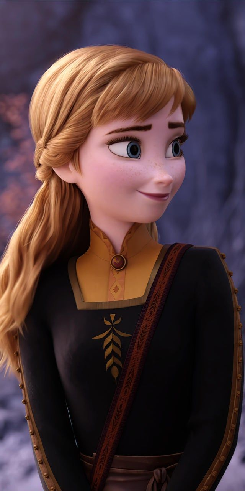
Принцеса Елза от Арендел притежава магически сили, които трудно контролира и чрез които създава лед и сняг, като често ги използва, за да играе с по-малката си сестра Анна. След като Елза случайно наранява Ана с магията си, родителите им, кралят и кралицата, отвеждат децата в колонията от тролове, водени от дядо Паби. Той лекува Анна, но променя нейните спомени, така че тя да забрави за магията на Елза. Дядо Паби предупреждава Елза, че тя трябва да се научи да контролира силите си и този страх ще бъде нейният най-голям враг. Кралят и кралицата изолират двете сестри в замъка, затваряйки замъка за поданиците си. В опит да защити сестра си от все по-непредсказуемите ѝ сили, Елза прекратява всички контакти с Анна, създавайки разрив между тях. Когато сестрите са тийнейджъри, родителите им загиват в морето по време на буря. След 21-вия си рожден ден Елза ще бъде коронясана за кралица на Арендел. Тя се страхува гражданите на кралството да не разберат за нейните сили и да се страхуват от нея. Замъкът е отворен за публика и се посещава сановници за първи път от години. Сред тях са хитрият херцог на Уеселтън и дръзкият принц Ханс от Южните острови, в когото Анна се влюбва от пръв поглед. Коронацията на Елза се извършва без инциденти, но тя все още се дистанцира от Анна. Анна и Ханс развиват романтична връзка по време на тържествата по коронацията и той импулсивно ѝ предлага брак, но Елза възразява, когато търсят нейната благословия. Наранена и объркана, Анна протестира, умолявайки Елза да обясни страха и изолацията си. Емоционалното напрежение кара Елза случайно да отприщи своите сили. Набедена за чудовище от херцога, Елза бяга към Северната планина, където накрая отприщва силите си, изгражда леден дворец, в който да живее живот на отшелничка. В този процес нейната магия неволно поглъща Арендел за вечна зима. Анна се осмелява да тръгне след Елза и да приключи зимата, оставяйки Ханс да командва в кралството. Тя се губи, но сига до магазина Оукен, където среща търговеца на лед Кристоф и елена му Свен, като ги убеждава да я заведат в планината. Атака на вълци води до унищожаването на шейната на Кристоф. Пеша, те срещат Олаф, весел снежен човек, създаден от Елза, който предлага да ги заведе при нея. Когато конят на Анна се връща в Арендел без нея, Ханс тръгва да намери Анна и Елза, придружени от слугите на херцога, които имат тайната заповед да убият Елза. Достигайки ледения дворец, Анна среща Елза. Когато Анна разкрива какво е станало с Арендел, ужасена, Елза признава, че не знае как да прекрати магията си. Страхът ѝ кара силите ѝ да се проявят още веднъж и тя случайно замръзява сърцето на Анна. Тогава Елза създава Маршмелоу, гигантско снежно чудовище, което прогонва Ана, Кристоф и Олаф. Осъзнавайки ефекта от заклинанието на Елза върху Анна, Кристоф я отвежда при троловете, неговото семейство осиновители. Дядо Паби разкрива, че Анна ще се превърни в ледена статуя, освен ако „актът на истинска любов“ не отмени заклинанието. Кристоф завежда Анна обратно у дома, за да може Ханс да я дари с целувката на истинската любов. Ханс и хората му стигат до двореца на Елза, побеждавайки снежното чудовище и пленявайки Елза. Анна е предадена на Ханс, но вместо да я целуне, Ханс разкрива, че всъщност е замислял да завземе трона на Арендел, като елиминира и двете сестри. Ханс заключва Анна в стая, за да умре, и след това манипулира сановниците да вярват, че Елза я е убила, но не и преди да бъдат женени. Той разпорежда екзекуцията на кралицата, само за да открие, че тя е избягала от затвора си. Олаф освобождава Анна и те се впускат във виелицата навън, за да се намерят Кристоф. Ханс се сблъсква с Елза отвън, твърдейки, че тя е убила Анна. Анна забелязва Ханс напът да убие Елза. Тогава тя изкача на пътя му и замръзва, спирайки Ханс. Опустошена, Елза прегръща и скърби над сестра си, която се размразява, нейният героизъм представлява „актът на истинска любов“. Осъзнавайки, че любовта е ключът към контрола на нейната магия, Елза прекратява зимата и дава на Олаф негов снежен облак, за да оцелее в по-топлия климат. Ханс е арестуван и заточен от кралството заради опита си за покушение, докато търговските връзки на херцога с Арендел са прекратени. Анна дава на Кристоф нова шейна и две целувки. Сестрите се събират отново и Елза обещава никога повече да не затваря портите на замъка.
Моана
Бабата на Моана, Тала, й разказва "историята за Мауи , променящият формата полубог на вятъра и морето и майстор на ветроходството, който открадва сърцето(вълшебен камък) на богинята Те Фити, но докато плава обратно Мауи е нападнат от Те Ка, вулканичен демон, който също иска сърцето. Вълшебната кука за риба позволяваща на Мауи да си променя формата и сърцето на Те Фити са изгубени в океана, а Мауи изчезва." Моана - момиче, дъщеря на вожд, което иска да пътува из морето, е избрана от океанът, да намери и върне сърцето на Те Фити. Въпреки че родителите на Моана се опитват да я държат далече от океана и да я подготвят да стане вожд на острова тя иска да плава. Когато се оказва, че няма риба, тя опитва с прасето Пуа да отиде отвъд рифа и да намери риба, но лодката й е повлечена от вълните и претърпява корабокрушение, а Моана се връща обратно на брега. Тогава баба й Тала й показва тайна пещера, пълна с кораби, разкривайки, че нейните предци са били пътешественици, но са спрели, след като сърцето на Те Фити е било откраднато, тъй като океанът вече не е бил безопасен. Освен това тя обяснява, че Te Kа причинява болест и разруха и тя трябва да намери Мауи и с негова помощ да върне сърцето на Те Фити и така да претотврати хаоса. Изведнъж океанът се появява и дава на Моана сърцето на Те Фити и така я убеждава да го направи. Отплавайки от пещерата, корабът на Моана е уловен в тайфун и претърпява корабокрушение на остров, където намира Мауи, който само се хвали с постиженията си. Тя настоява Мауи да върне сърцето, но той отказва и я затваря в капан в пещера. Тя успява да избяга и се изправя срещу Мауи, който неохотно се съгласява да й помогне. По пътя са атакувани от Какамора - кокосови пирати - които, подобно на други същества, търсят сърцето, но Моана и Мауи ги премахват от пътя си. След това отиват в Лалотой, Царството на чудовищата, за да си върнат куката на Мауи от Таматаа, гигантски кокосов рак. Накрая са нападнати от Те Ка, след като пристигат на острова на Те Фити. Двамата се скарват, понеже куката на Маии пострадва и само още един удар и вече ще се счупи и затова се отказва и преобразявайки се в орел, отлита като оставя Моана сама. Тя обаче не се отказва и се изправя срещу Те Ка. Изведнъж Мауи се завръща, след като е променил мнението си, и помага на Моана да стигне до Те Фити, като се бие с Те Ка, и така губи куката си куката. Тогава Моана разбира, че Те Ка е Те Фити, когато е без сърцето си. Моана връща сърцето на Те Ка или Те Фити, а възстановената богиня лекува океана. Мауи се извинява на Те Фити, а тя възстановява куката му и дава на Моана нова лодка. Моана се сбогува с Те Фити и се връща у дома, където се събира с родителите си и помага за възобновяване на пътуването из океана.